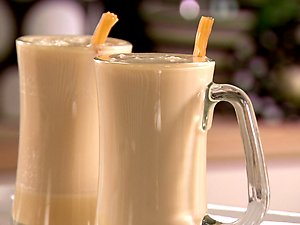

Butterbeer

I figure this is probably one that everybody knows and has been curious about, so it makes an appropriate first post. I adapted this recipe with some minor changes from Sandra Lee of the Food Network. I normally can't stand the woman but I have to give her kudos to for this one... I came across approximately 42 billion different recipes for Butterbeer but I liked this one best. Perfect for the holidays!
Ingredients
- 1/4 cup evaporated milk
- 1/4 cup butterscotch sauce
- 2 tablespoons whipped butter, room temperature
- 1 1/2 cups vanilla cream soda
Directions
- Combine evaporated milk, butterscotch topping, and butter in a glass heatproof measuring cup. Heat in microwave for 1 minute.
- Remove and stir until butter has melted and incorporated into mixture.
- Meanwhile heat cream soda in another heatproof measuring cup for 1 minute 30 seconds.
- Divide butterscotch mixture between 2 (10 to 12-ounce) mugs. Fill mugs with heated cream soda and stir thoroughly.
- Serve garnished with a cinnamon stick or an old-fashioned butterscotch candy stick.
Home